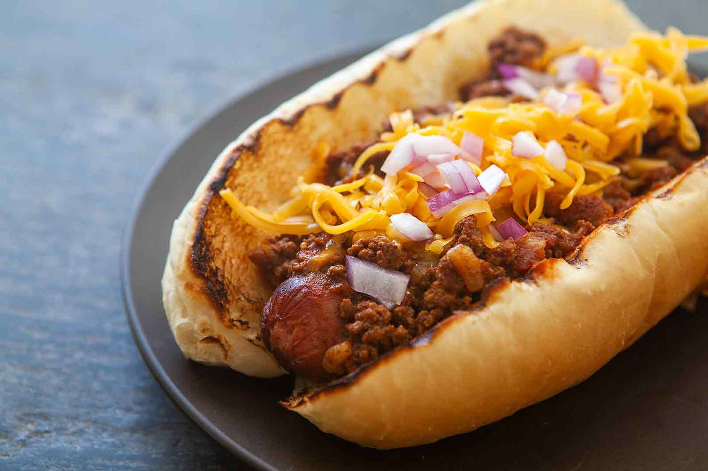

Walking Chilli Cheese Dog

Chilli Cheese Dog in a bag
Ingrediants
- 2 (15-ounce) cans chili with beans (such as Hormel®)
- 1 (12-oz.) package little smokies sausages, chopped (about 2 cups)
- 1 cup finely chopped white onion (from 1 medium [8 oz.] onion)
- 1 (4-ounce) packet processed cheese sauce (such as Velveeta®)
- 2 cups shredded sharp Cheddar cheese, divided
- 8 (.75 ounce) Funyun bags, tops trimmed
- 1/2 cup sour cream
- finely chopped scallions and sliced pickled jalapeño chiles, for serving
Steps
- Gather all ingrediants
- Heat chili, little smokies, and white onions ina large skillet over medium,
stirring occasionally, until heated through and edges just begin to bubble,
about 3 minutes.
- Add cheese sauch and 1 1/2 cupes of the chedder cheese to the chili mixture, stirring TK,
until cheese is melted and thoroughlycombined, about 2 minutes.
-
Spoon 3/4 cup of chili mixture into each bag. Top evenly with sour cream (1 tabelspoon of each),
scallians, pickled jalapenos, and remaining 1/2 cup Chedder cheeese; serve immediately.
Return Home